Адаптивный дизай в верстке
«Фикс» на широких экранах
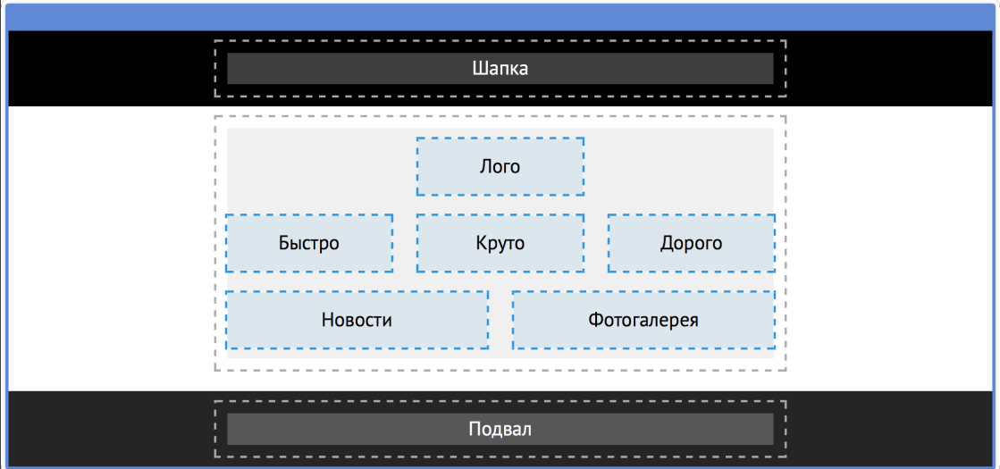
«Фикс» на узких экранах
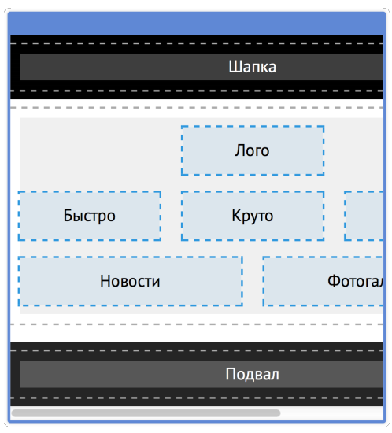
Как сохранить сетку для всех экранов?
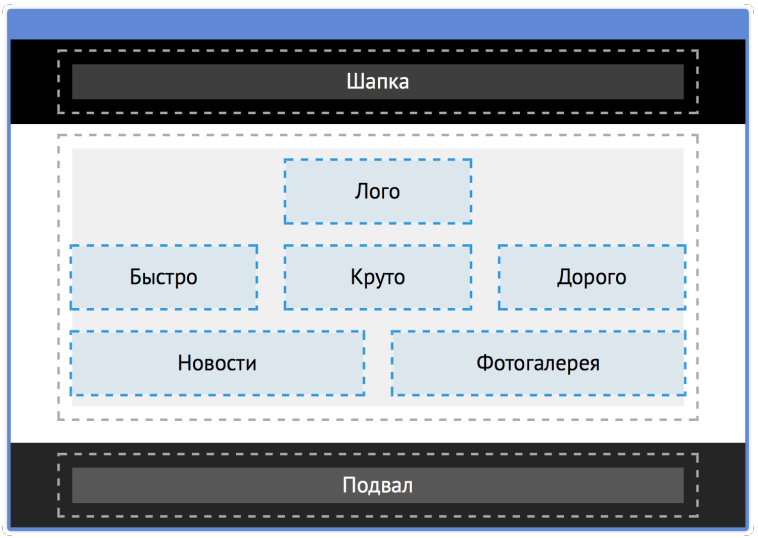
Резиновая сетка может помочь?
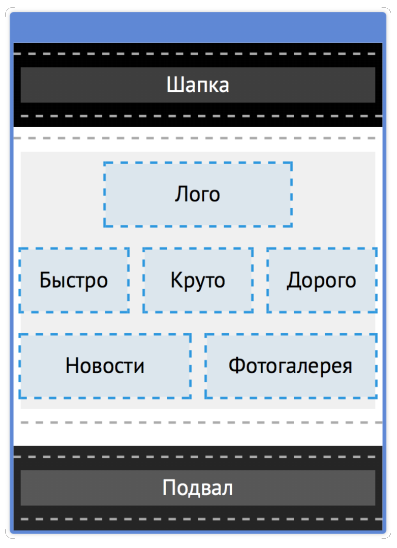
Но для «резины» всегда есть предел
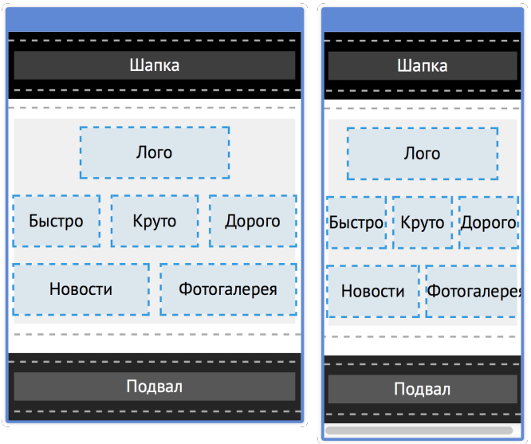
Минимальная ширина не спасает
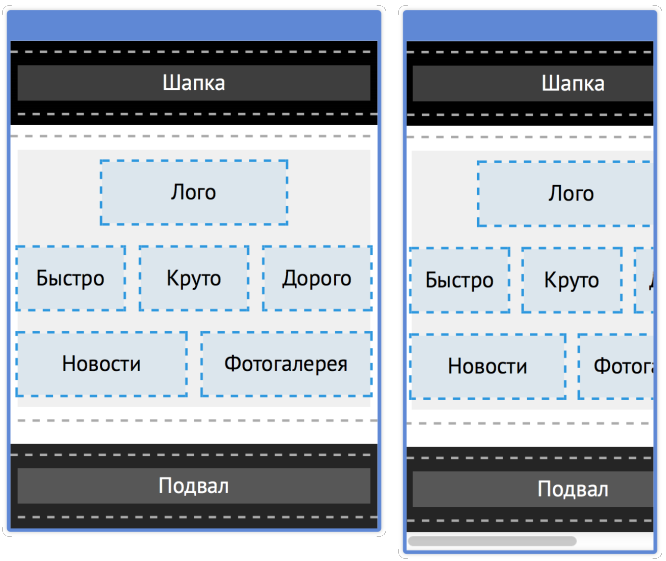
Зачем сохранять сетку для всех экранов?
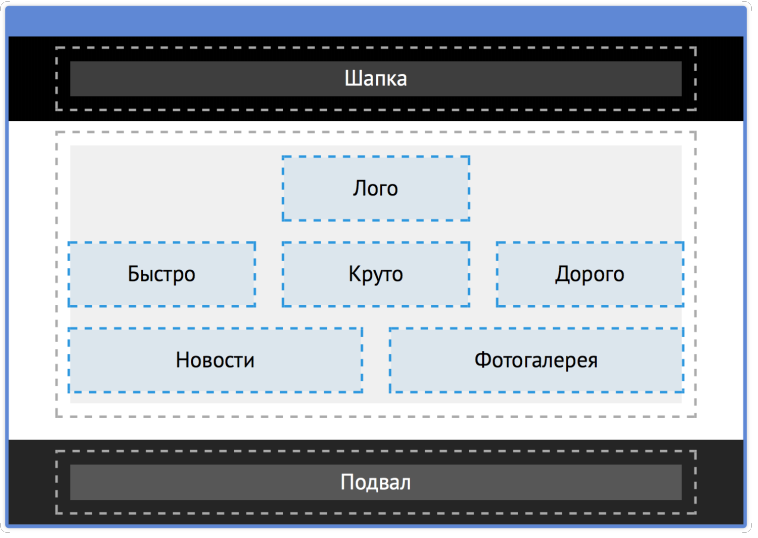
Каждому экрану сетки по потребностям!
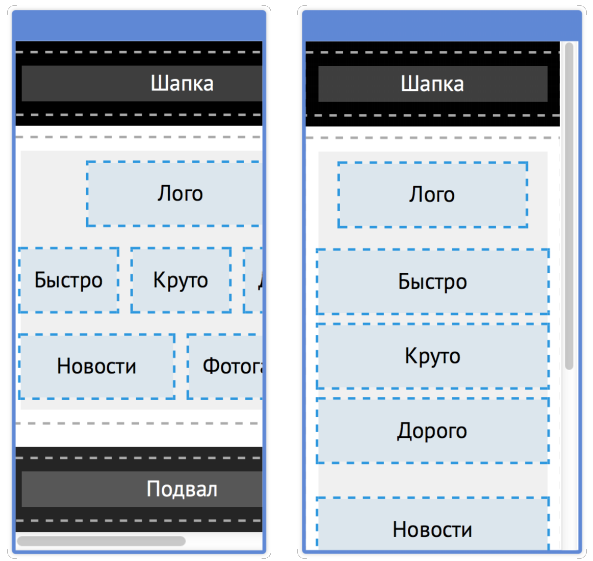
Cравним фиксированную сетку с резиновой
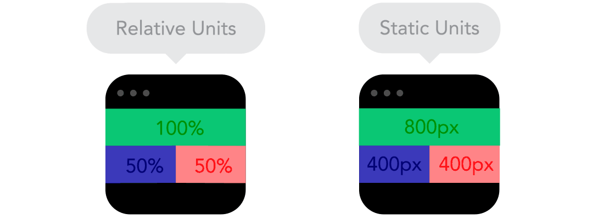
Принцип перестройки сетки
Содержание должно наилучшим образом отображаться
на разных размерах вьюпорта (видимой области). А для
этого нужно перестраивать сетку.
Адаптивные сетки
По умолчанию работают одни CSS-правила.
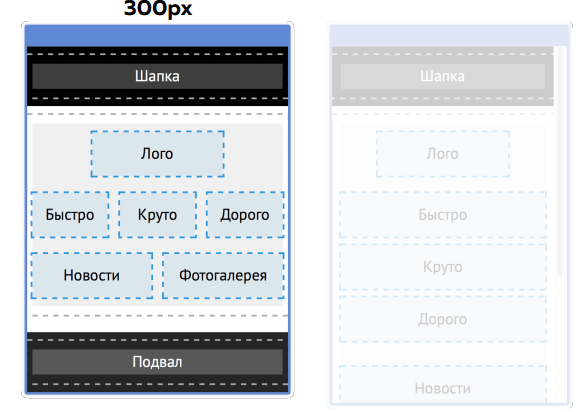
Адаптивные сетки
При некоторых условиях активируются дополнительные CSS-правила.
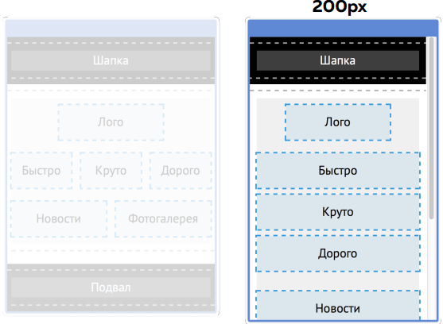
Медиавыражения (media queries)
Позволяют активировать CSS-код в зависимости от разных условий
Терминология: адаптивный, отзывчивый
В англоязычных источниках отличают «adaptive»(адаптивный)
и «responsive»(отзывчивый). Если говорить только про фронтенд, то:
- «responsive» — адаптивность с резиновой сеткой
- «adaptive» — адаптивность с фиксированной сеткой
Терминология: адаптивный, отзывчивый
Но есть и другое понимание:
- «responsive» — адаптивность, реализуемая на клиенте
-
«adaptive» — адаптивность, реализуемая не на клиенте,
например, разный HTML для разных устройств (работает
серверное определение устройства).
Адаптивный веб-дизайн более общее понятие.
Адаптивный веб-дизайн (англ. Adaptive Web Design) — дизайн веб-страниц, обеспечивающий правильное отображение сайта на различных устройствах, подключённых к интернету и динамически подстраивающийся под заданные размеры окна браузера.
Рассмотрим отзывчивость и адаптивность в контексте фронтенда
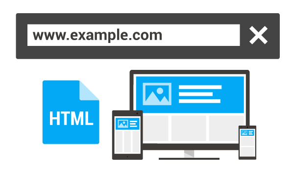
«adaptive» — адаптивность с фиксированной сеткой
Адаптивный сайт. Сайт, который на мониторе отображается одним образом, на планшете иначе, а на смартфоне — снова
по-другому. Меняется расположение блоков, размеры кнопок и полей, текстов. Зачем? Чтобы пользователю было комфортнее
пользоваться сайтом: в кнопку легче попадать пальцем, если она крупная, текст в метро легче читать, если он 20
пунктов, а не 14.
Адаптивный сайт.

«responsive» — адаптивность с резиновой сеткой.
Отзывчивый сайт. Сайт, который имеет несколько вариантов отображения, но переходы между ними плавные, как на
«резине». Меняете размер окна — кнопочки медленно меняются в размерах, блоки плавно ужимаются, а когда наступает
контрольная точка — сайт меняет расположение блоков под планшет или под смартфон.
Отзывчивый сайт.

Сравним
Сравним

Попробуем определить вместе, какой тип сайта responsive иди adaptive?
Резина или фикс?
- Если нет явной задачи делать резину — на мобильной версии можете сделать резину, на всех остальных фикс.
- Если есть задача делать резину:
- определитесь, на каких версиях макет будет тянуться,
- увеличьте сроки и стоимость работы.
Время и стоимость работ
- Резиновая вёрстка увеличивать стоимость разработки и поддержки в 2-3 раза.
- Фиксированные сетки и сетки в процентах делаются с одинаковой скоростью (при наличии опыта).
- Трудоёмкость возрастает из-за содержимого этих сеток.
Время и стоимость работ
- При резиновой вёрстке поведение содержания в крайних точках нужно дополнительно улучшать.
- Это съедает время.
- Нужна высокая квалификация верстальщика, который начинает решать дизайнерские задачи.
- Если верстальщик не сильный, то в работу нужно включать дизайнера.
Типовые задачи для фикса
- Малая плотность информации в интерфейсе.
- Карточные интерфейсы, в которых важно сохранение пропорций.
- Текстовые интерфейсы.
- Быстрая и дешёвая поточная разработка.
Типовые задачи для фикса
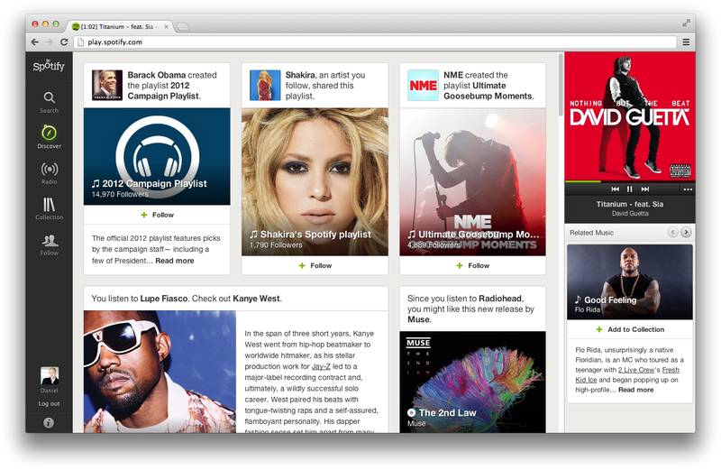
Типовые задачи для резины
- Интерфейсы с высокой плотностью информации.
- Интерфейсы, специально рисовавшиеся под резину.
Типовые задачи для резины
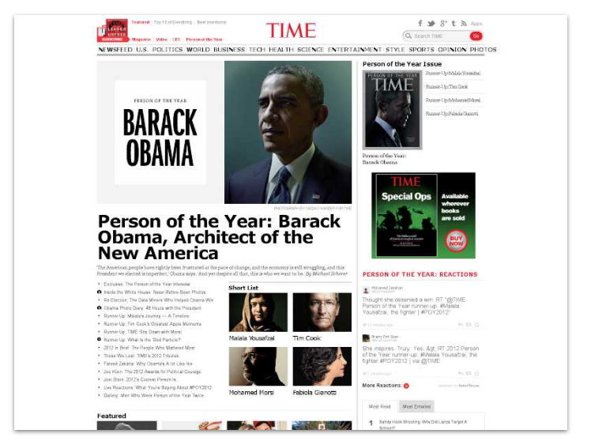
Mobile first
Когда дизайн страниц изначально создают на экране
мобильника и выкидывают из дизайна всё лишнее.
Отличие mobile first
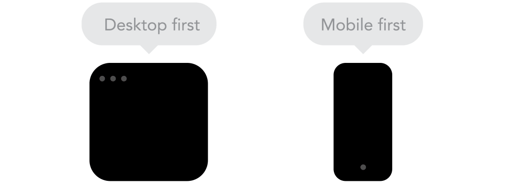
Mobile first c технической точки зрения:
- Тестирование на настоящих мобильных.
- Оптимизация веса страниц, скорости загрузки, производительности (и чтобы батарейку не съедало).
- Принцип «от простой сетки к сложной».
- Детали для планшетных и десктопных версий спрятаны
- умолчанию.
- Увеличенные элементы управления.
- Измененное положение элементов управления.